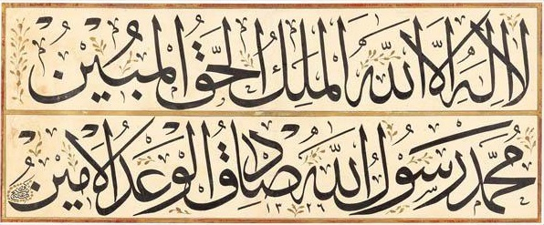

Rahmet sıfatları o kadar geniş ki insan kendini sınırsız bir özgürlük içinde görebilir. Fatiha suresi rahmeti ilan ettikten sonra elbette hesabı hatırlatacak:
1:4 mâliki yevmid-dîn
Din gününün Sahibi
"Rahmetin genişliğine güvenip azgınlaşma, hesap var, ödeşme var. Ödeşme gününün Sahibi de yine o rahmetin Sahibidir."
Mâlik ismini anlamamız için bu dünyada küçük ölçekli bir mülkiyet var: "Şuraya kadar benim, şurdan sonrası onun" diyen kayıt sistemleri geliştirmişiz. Lakin mülkün ilk ve gerçek Sahibini unutmak olmaz:

3:26 kulillâhumme mâlikel-mulk
De ki: "Ey mülkün Mâliki Allah! Mülkü dilediğine verirsin, dilediğinden çeker alırsın; dilediğini aziz, dilediğini zelil edersin. Hayır Senin elindedir. Şüphesiz, Sen her şeye kâdirsin.
"Bugün mülk kimin?" dehşetli bir soru... Sorunun cevabı 16. günde gelecek, inşaallah.
Aynı kökten türeyen bir de Melik ismi var. Kitap'ta 15 kere geçiyor: Çoğu dünya kralları için kullanılmış, 5 tanesi el-Melikul-Hakk: Gerçek Melik.
23:116 fete’âlallâhul-melikul-hakk
Gerçek hükümdar olan Allah ne yücedir. O’ndan başka ilah yoktur. O, değerli arşın Sahibidir.
Bu ayetten esinlenen güzel bir levha:

lâ ilâhe illallâh, el-melikul-hakkul-mubîn
muhammedur-rasulullah, sadikul-va'dil-emîn
Kamer suresinin son ayetinde (54:55) bu kelime uzun i ile okunur: "Muktedir bir Melîk." Bk: Doğruluk tahtı